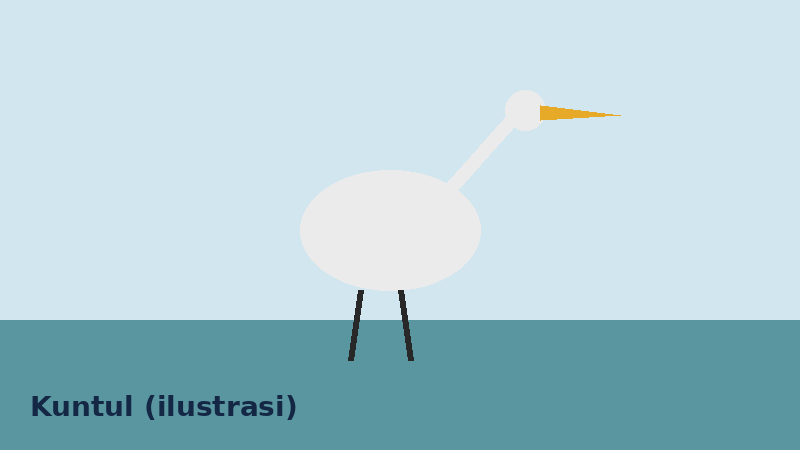

Burung yang Umum Diamati di Mangrove
Berikut enam jenis burung air dan burung pesisir yang sering dijadikan target pengamatan pemula.

Tabel Spesies
| No | Nama Lokal | Nama Ilmiah | Status IUCN | Waktu Pengamatan |
|---|---|---|---|---|
| 1 | Kuntul kecil | Egretta garzetta | Least Concern | Pagi dan sore |
| 2 | Cangak abu | Ardea cinerea | Least Concern | Pagi |
| 3 | Blekok sawah | Ardeola speciosa | Least Concern | Pagi dan sore |
| 4 | Kowak-malam kelabu | Nycticorax nycticorax | Least Concern | Senja |
| 5 | Cekakak sungai | Todiramphus chloris | Least Concern | Pagi |
| 6 | Pecuk-ular asia | Anhinga melanogaster | Near Threatened | Pagi |
Catatan Singkat
- Kuntul kecil dan blekok sawah mudah dikenali dari bentuk leher dan paruhnya.
- Pecuk-ular asia sering terlihat menjemur sayap setelah menyelam.
- Kowak-malam kelabu paling aktif saat senja.
Mau mencatat salah satunya? Buka halaman Lapor Temuan.